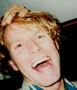
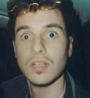
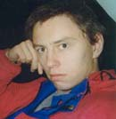
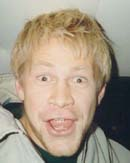

|
The Lurken-Team besto av: |
|
|
 Sjef: Arne Maskinstudent som jobber for gym, planleggningsdager og tvungen mekleordning på NTNU. Drømmer om en jobb som produktutvikler i en kullgruve siden det er gjort lite på dette området de siste hundre år og Arne ser på dette for fremtidens energiform. Er en ivrig forkjemper for ansettelse av flygeledere i skianlegg, tørr ikke annet etter at han ble overkjørt av toget i Riksgrensen enda han trodde han fløy høyt over skinnegangen. Har utpreget svenske trekk og snakker også til tider slik som broderfolket. Ellers utadvendt og godt likt  Jornalist 1: Runaldo Den bifile medisinerstudenten Runaldo, er en ressursperson av dimensjoner for Lurken. Selv om han prioriterer volleyballtreningene foran telemarken, så vil han alltid være med å ta verv. Muligens for å ruste opp CVn for å skaffe seg en jobb selv med strykkarakterer fra obduksjon-, gynekologi-, og pasientbehandlingseksamene. Runaldo har fått nok av gladkristne bollebakende orienteringsløpere og tar til orde for et litt tøffere miljø I gruppa. Det skal sies at denne mannen er bestemann på det norske afterskilandslaget. Tryller fram en fest fra ingenting, og har alltid en velbrukt røverhistorie på lager. Rune er blakk for tiden etter et enormt pengeforbruk han oppsummerer på følgende måte: Det meste av pengene gikk til sprit, damer og biler. Resten bare sløste jeg bort..  Journalist 2: Alf A. Krøll Gladkristen industriklatrer fra Haugesund. Drømmer om et liv I sølibat, noe som skulle være fullt mulig med den totalt uforståelige dialekten. Går andre marin og er interessert å jobbe med ubåter I framtida. Har kjørt en god del telemark og har ambisjoner om å lære seg plogtelemark før sesongen er omme.  Freelance-journalist: Ivar Ivar er en gammel traver I telemarksgruppa. Han ble sjekket opp på gamle Bør Børson av en av jentene I styret I 93. Ivar ble hodestups forelsket og tok på seg verv I hytt og pine for mange år framover. Ivar slutter til jul og er bare med som freelancer til han skal begynne å jobbe som atferdspsykolog på en institusjon I Oslo etter jul. Ivar er ikke redd for å drite seg ut, og er viden kjent for sin forkjærlighet for den afrikanske vinneren av VM I after-ski-sanger I 94. Lurken på web: Mats B Pettersen <-- Hjemmeside |